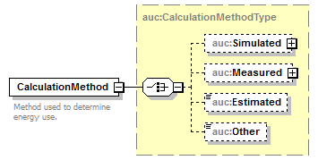

| diagram |  | ||
| namespace | http://nrel.gov/schemas/bedes-auc/2014 | ||
| type | auc:CalculationMethodType | ||
| properties |
|
||
| children | auc:Simulated auc:Measured auc:Estimated auc:Other | ||
| used by | |||
| annotation |
|
||
| source | <xs:element name="CalculationMethod" type="auc:CalculationMethodType"> <xs:annotation> <xs:documentation>Method used to determine energy use.</xs:documentation> </xs:annotation> </xs:element> |